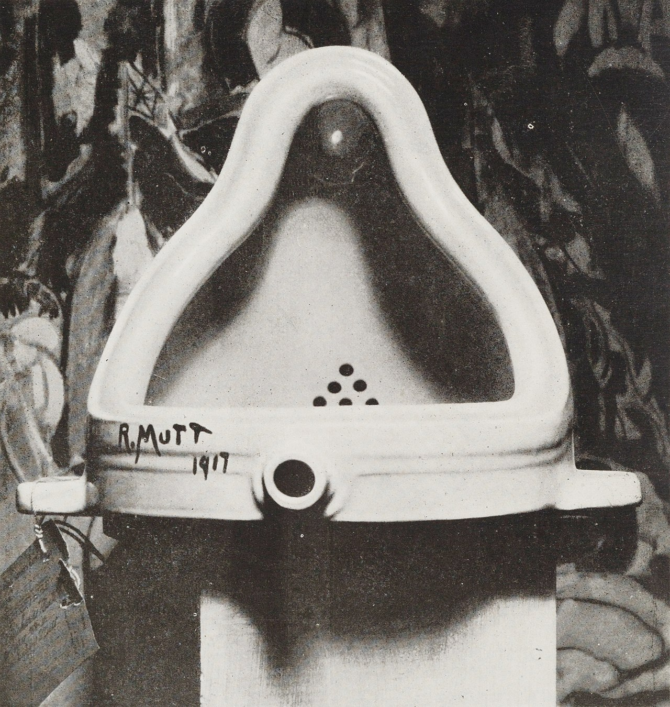
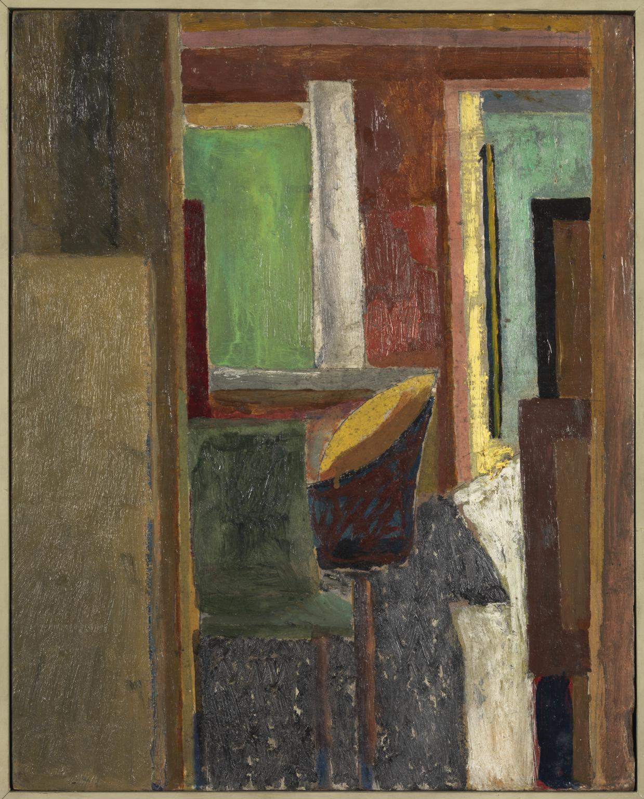
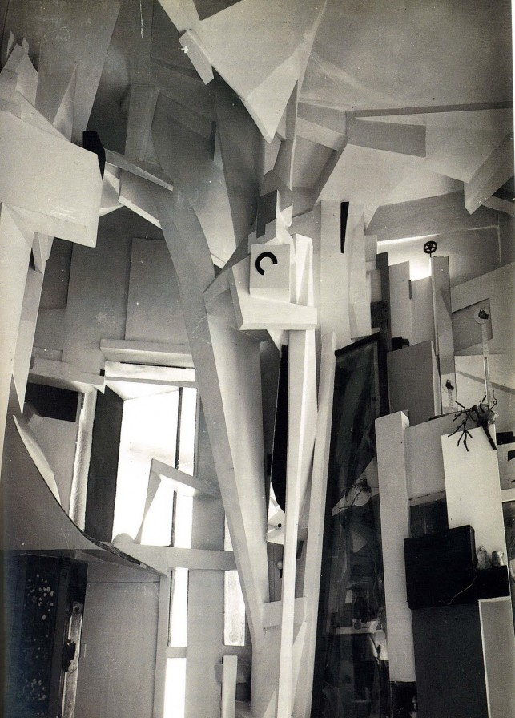
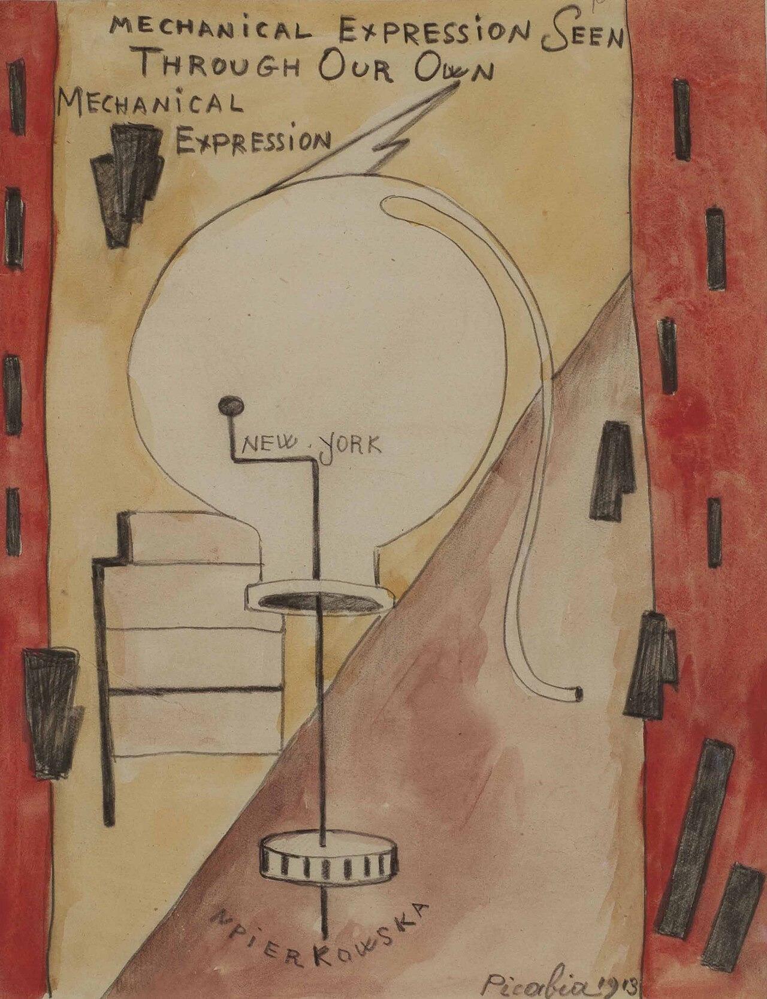
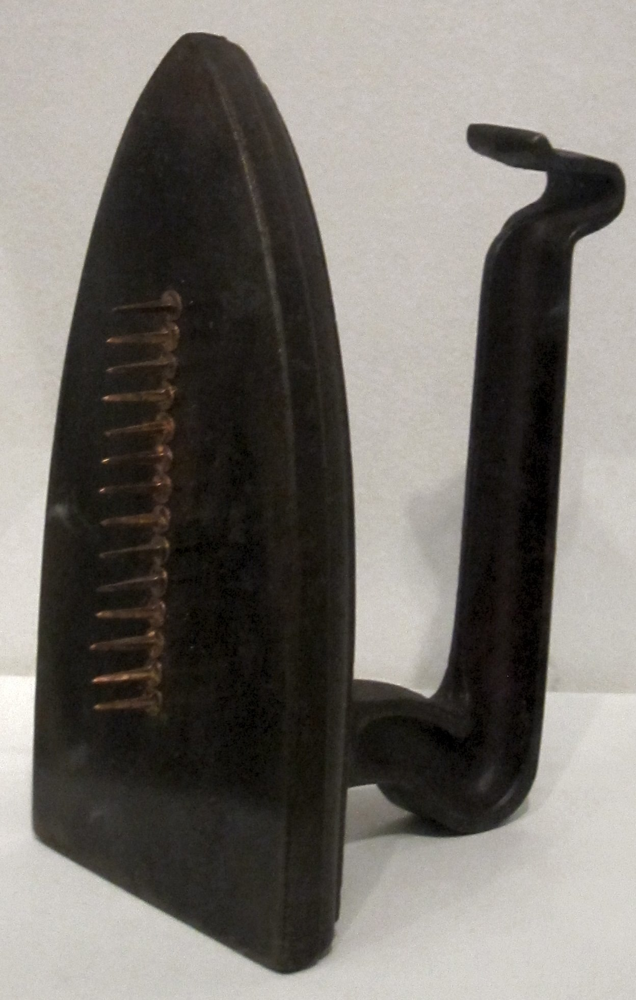
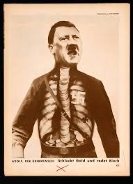
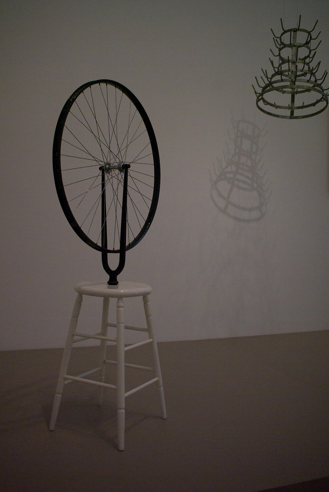

Meesterwerk: Fountain
Marcel Duchamp, 1917

⚜️ UITGEBREIDE STIJLFIGUREN
🎲 ANTI-KUNST
Kunst is dood: Dada wil de kunst vernietigen. Logica, redelijkheid, schoonheid - weg ermee. Het is een protest tegen de burgerlijke samenleving die de oorlog veroorzaakte.
Absurditeit: Grappig, maar ook tragisch. Dada lacht om de waanzin van de wereld, maar die lach is bitter.
🎲 TOEVAL
Chance operations: Gooien met dobbelstenen, knippen uit kranten, blind tekenen. De kunstenaar geeft de controle op.
Automatisme: Schrijven of tekenen zonder nadenken. Het onderbewuste mag spreken.
🎲 COLLAGE & READYMADE
Bestaande objecten: Een urinoir wordt kunst. Een fietswiel op een kruk. De kunstenaar selecteert, niet maakt.
Photomontage: Knippen en plakken uit kranten. De moderne wereld als fragmentarische nachtmerrie.
🎲 PERFORMANCE & POËZIE
Dada-avonden: Geluidsgedichten, simultane poëzie, uitdagend gedrag. Kunst als evenement, niet object.
Zaumlaut: Dada is kinderlijk - "dada" betekent hobbelpaard. Ernst wordt bespot.
📚 TIJDSGEEST CONTEXT (1916-1924)
🌍 POLITIEK PERSPECTIEF - FOCUS OP STIJLFIGUREN & THEMA'S
Het Dadaïsme (1916-1924) ontwikkelde zich in een politieke context die werd gekenmerkt door de totale ontwrichting van de Eerste Wereldoorlog, de val van keizerrijken en de opkomst van revolutionaire bewegingen. De politieke structuur werd gedomineerd door de crisis van de Europese orde: de Oostenrijks-Hongaarse dubbelmonarchie, het Duitse Keizerrijk en het Russische Tsarenrijk stortten ineen, terwijl de overwinnaars (Frankrijk, Groot-Brittannië, Italië) uitgeput en verzwakt uit de oorlog kwamen. Zürich, de bakermat van het Dadaïsme, was een neutrale enclave waar vluchtelingen, deserteurs en kunstenaars uit heel Europa samenkwamen om te ontsnappen aan de oorlogsgruwel. Het Cabaret Voltaire, opgericht door Hugo Ball en Emmy Hennings in 1916, werd het centrum van een artistieke revolte die niet alleen de kunst, maar de hele westerse beschaving in vraag stelde.
De sociale dynamiek werd gekenmerkt door een diepe vervreemding van de traditionele maatschappij. De dadaïsten, van wie velen getraumatiseerd waren door hun oorlogservaringen, verachtten de bourgeoisie, de nationalisten, de kerk en de politieke elites die zij verantwoordelijk hielden voor de oorlog. Hun revolte was niet politiek in de traditionele zin - zij riepen niet op tot een specifieke politieke verandering - maar antipolitiek: een weigering om deel te nemen aan een systeem dat oorlog, onderdrukking en leugens had geproduceerd. De dadaïsten omarmden het absurde, het ongerijmde, het nonsensicale als strategieën om de logica en rationaliteit van de heersende orde te ondermijnen. Tegelijkertijd waren velen van hen politiek radicaal: in Berlijn ontwikkelden George Grosz, John Heartfield, Hannah Höch en Raoul Hausmann een vorm van politiek dadaïsme dat direct kritiek leverde op de Weimarrepubliek, het opkomende nationaalsocialisme en het kapitalisme.
De verbinding tussen politiek en artistieke stijl was direct en intentioneel. Het Dadaïsme's gebruik van toeval, onzin, collage, fotomontage en "ready-mades" was een bewuste strategie om de traditionele noties van kunst, schoonheid en betekenis te ondermijnen. Marcel Duchamp's "Fountain" (1917), een urinoir dat hij signeerde als "R. Mutt" en indient bij een tentoonstelling, was niet slechts een provocatie, maar een fundamentele vraag: wat is kunst? Wie bepaalt wat kunst is? Als een industrieel object in een galerij kan worden geplaatst en "kunst" kan worden genoemd, wat zegt dat dan over de waarde en betekenis van kunst? De dadaïsten gebruikten kunst niet om schoonheid te creëren of boodschappen over te brengen, maar om het systeem van kunst zelf te deconstrueren. In de Berlijnse variant, met zijn scherpe fotomontages en karikaturale portretten van politici en militairen, werd Dada direct een instrument van politieke kritiek. Hannah Höch's "Schnitt mit dem Küchenmesser" (1919) is een visuele aanklacht tegen de Duitse samenleving na de oorlog, met zijn chaos, zijn tegenstrijdigheden, zijn politieke absurditeiten. Het Dadaïsme was daarmee niet slechts een artistieke beweging, maar een fundamentele revolte tegen de westerse beschaving - een revolte die, hoewel apolitiek in haar kern, direct verbonden was met de politieke crisis van haar tijd.
Bronnen: Wikipedia - Dada, Cabaret Voltaire, Hugo Ball, Marcel Duchamp, Hannah Höch, World War I, Weimar Republic, Anti-art.
📖 LITERAIR PERSPECTIEF
- Simultane poëzie (meerdere stemmen tegelijk), geluidsgedichten (pure klank), zaum (transrationele taal)
- Tristan Tzara's "Hoe maak je een dadaïstisch gedicht" (knip een krant in stukjes, gooi ze in de lucht)
- Literatuur wordt performance, wordt geluid, wordt nonsens
🧠 PSYCHOLOGISCH PERSPECTIEF
- De mens is niet rationeel maar irrationeel, niet beschavd maar barbaars
- Freud's onderbewuste wordt gebruikt - maar niet om te helen, om te onthullen
- De oorlog toonde wat mensen konden doen
- Dada reageert met cynisme, met woede, met gekte als enige gezonde reactie
⚙️ HISTORISCH PERSPECTIEF
- Technologie maakt massavernietiging mogelijk (gifgas, tanks, vliegtuigen)
- De industriële samenleving reduceert mensen tot nummers
- Fotografie en film veranderen de werkelijkheid
- Dada gebruikt deze media om ze te ondermijnen
- De beroemde Dada-beurs in Berlijn (1920) veroorzaakt relletjes
🎭 FILOSOFISCH PERSPECTIEF
- Nihilisme: er is geen betekenis, geen waarheid, geen doel
- Dada is anti-filosofie - het weigert systemen
- Het is existentialisme avant la lettre: de mens moet betekenis creëren in een betekenisloos universum
- Maar Dada zegt: waarom zou je? Lachen is de enige reactie
🎨 MEESTERWERKEN - GEDETAILLEERDE ANALYSE
1. "Fountain" (1917) — Marcel Duchamp
Origineel verloren, replica's in musea · Urinoir met signatuur "R. Mutt" · Porselein
Achtergrond: Duchamp kocht een urinoir, draaide het 90 graden, schreef een pseudoniem erop, en stuurde het naar een tentoonstelling. Het werd geweigerd. Het is het symbool van de readymade - het meest invloedrijke kunstwerk van de 20e eeuw.
🔍 STIJLANALYSE
Readymade: Duchamp koos een industrieel object, deed minimale ingreep, en noemde het kunst. De kunstenaar als selecteur, niet als maker. Dit ondermijnt 500 jaar kunstgeschiedenis.
Context: Een urinoir is functioneel, privé, vulgair. Het hoort niet in een museum. Duchamp plaatst het daarom wél in een museum. De context maakt het kunst.
R. Mutt: Het pseudoniem is een grap. "R" staat voor Richard (arm), "Mutt" voor "arme hond". Duchamp wilde anoniem blijven, maar ook niet. Het is speels en serieus.
Invloed: Conceptuele kunst, minimalisme, pop art - het begint allemaal hier. Het idee dat het concept belangrijker is dan het object. Kunst als intellectuele uitdaging.
2. "Celebes" (1921) — Max Ernst
Tate Modern, Londen · 125 × 108 cm · Olieverf op doek

Achtergrond: Ernst's meest bekende Dada-schilderij. De titel verwijst naar een technisch handboek over een soort vis (blauwe vinvis) uit Celebes. Het beeld is een nachtmerrie van mechanische en organische vormen.
🔍 STIJLANALYSE
Collage-techniek: Ernst gebruikte "frottage" (wrijven) en "grattage" (krassen) om textuur te creëren. Het centrale object lijkt op een olifant, een machine, een slang - het is ondefinieerbaar.
Kleur: Aardtinten, industriële kleuren - geen vrolijke Dada-kleuren maar somber, angstaanjagend. Het is een vision van de moderne hel.
Mechanisch monster: Het centrale wezen heeft een buis als slurf, wielen, huid die op metaal lijkt. Ernst's obsessie: de mens wordt machine, de machine wordt levend.
Celebes: Het woord klinkt exotisch, maar het is gewoon een technisch handboek. Ernst gebruikt taal als poëzie - ongerelateerd aan het beeld, maar toch passend.
3. "Naakt dat een Trap afdaal" (1912) — Marcel Duchamp
Philadelphia Museum of Art · 147 × 89 cm · Olieverf op doek

Achtergrond: Oorspronkelijk geschilderd voor Duchamp's Dada-periode, maar het past er perfect in. Het veroorzaakte een schandaal op de Armory Show in New York (1913). Het publiek lachte erom.
🔍 STIJLANALYSE
Beweging: Geïnspireerd door chronofotografie (Muybridge). Het naakt is opgebroken in sequenties - het daalt de trap af in tijd. Het is cinema op doek.
Geometrie: Het lichaam is mechanisch, hoekig, niet organisch. Het is een machine die beweegt. Duchamp combineert het menselijke met het industriële.
Titel: De titel is belangrijk - zonder "descending a staircase" zou je het niet herkennen. Duchamp speelt met verwachtingen. Het is een verhaal zonder verhaal.
Reactie: Een criticus noemde het "een explosie in een shingle factory". Dat was als belediging bedoeld, maar Duchamp vond het prachtig. Het beschrijft perfect de fragmentatie.
4. "Merzbau" (1923-1937) — Kurt Schwitters
Hannover, Duitsland (vernietigd 1943) · Gemengde media · Installatie

Achtergrond: Schwitters' levenswerk - een compleet huis omgetoverd tot collage. De naam "Merz" kwam toevallig van een woordfragment. Het was Dada als architectuur, als levenswijze.
🔍 STIJLANALYSE
Collage-architectuur: Schwitters gebruikte afval: tramkaartjes, stukjes hout, glas, textiel. Het huis werd één groot assemblage. Alles is materiaal.
Merz: Schwitters bedacht zijn eigen term - "Merz" betekent niets, maar staat voor alles. Het is Dada's anti-logica in woordvorm.
Privé-tempel: Het was zijn eigen huis - de hal, de trap, de kamers werden kunst. Bezoekers moesten door een raam klimmen. Het was exclusief en inclusief tegelijk.
Vernietiging: De RAF bombardeerde Hannover in 1943. Het werk is verloren, alleen foto's resteren. Dada als vluchtige ervaring, niet als object.
5. "Mechanische Figuur" (1916) — Francis Picabia
Privécollectie · 92 × 73 cm · Olieverf en collage op doek

Achtergrond: Picabia's "mechanomorfische" werken - mensen afgebeeld als machines. Een satire op de moderne mens als automaat, als onderdeel van de industriële machine.
🔍 STIJLANALYSE
Mens-machine: Het figuur bestaat uit tandwielen, buizen, mechanische delen. Maar het is toch een portret - van een emotioneel, irrationeel wezen dat zichzelf als machine ziet.
Ironie: Picabia was zelf een machine - hij produceerde schilderijen in serie, met hulp van assistenten. De mechanische stijl was ook zijn eigen werkwijze.
Taal: Hij voegde woorden toe - "Voilà Elle" (Daar is ze). De tekst heeft geen duidelijke relatie met het beeld. Dada's liefde voor nonsens.
Invloed: Dit type werk beïnvloedde later het Futurisme en de Pop Art. De mens als product, als consumentengoed.
6. "Cadeau" (Cadeautje) (1921) — Man Ray
Verschillende replica's · 33 × 16 cm · IJzer met spijkers

Achtergrond: Man Ray's meest bekende "object" - een strijkijzer met spijkers eraan. Gemaakt in een ochtend voor een tentoonstelling. Het cadeau dat niemand wil hebben.
🔍 STIJLANALYSE
Contradictie: Een strijkijker maakt dingen glad; spijkers maken dingen ruw. Het object kan zijn functie niet vervullen - het is zelf anti-functioneel.
Geweld: De spijkers steken omhoog als wapens. Het is agressief, gevaarlijk. Man Ray transformeert een huiselijk object in iets dreigends.
Humor: De titel is sarcastisch - dit is geen cadeau. Het is een grap, maar een scherpe. Dada lacht om de consumentensamenleving.
Replica's: Het origineal is verdwenen. Man Ray maakte later replica's - het idee telt, niet het object. Conceptuele kunst avant la lettre.
7. "Mechanische Kop (De Geest van onze Tijd)" (1920) — Raoul Hausmann
Centre Pompidou, Parijs · 32 cm hoog · Assemblage van voorwerpen

Achtergrond: Een kapperkop met een liniaal als voorhoofd, een zakhorloge, een portefeuille. Hausmann's kritiek op de Duitse burger: leeg, materialistisch, mechanisch.
🔍 STIJLANALYSE
Assemblage: Hausmann plakte bestaande objecten samen - geen traditionele sculptuur. Het is fotomontage in 3D.
De Geest: De titel is ironisch - de "Geest van onze Tijd" is leeg. Het zakhorloge staat voor de obsessie met tijd, efficiëntie. De portefeuille voor kapitalisme.
Deutscher Michel: Het is een karikatuur van de gemiddelde Duitser - burgerlijk, materialistisch, zonder eigen denken. Politieke satire als kunst.
Photomontage: Hausmann was ook de uitvinder van de fotomontage in Berlijn. Dit object is een logisch vervolg - assemblage als sociale kritiek.
8. "Adolf, de Superman" (1932) — John Heartfield
Arbeiter-Illustrierte-Zeitung · Fotomontage · A4 formaat

Achtergrond: Heartfield's politieke fotomontages waren Dada-wapens tegen het nazisme. Hitler met een gouden keel - hij spuwt goud, praat goud, is gekocht.
🔍 STIJLANALYSE
Politieke Dada: Heartfield gebruikte Dada-technieken (collage, absurditeit) voor een doel: politiek protest. Het is Dada als wapen, niet als spel.
X-ray: Het beeld laat Hitlers keel doorschijnen - alsof we een röntgenfoto zien. Hij is transparant, hol, gemaakt van geld. De metafoor is duidelijk.
Superman: De titel verwijst naar Nietzsche's Übermensch, maar ook naar de Duitse mythe van de sterke leider. Heartfield demystificeert - de "superman" is een geldwolf.
Rechtstreekse actie: Deze montages verschenen in communistische kranten, niet in galerieën. Kunst als propaganda, als waarschuwing.
9. "Fietswiel" (1913) — Marcel Duchamp
Guggenheim, New York · 64 × 50 cm · Metaal, hout

Achtergrond: Duchamp's eerste "readymade" - een fietswiel op een keukenkruk. Hij draaide eraan om te kijken hoe het bewoog. Kunst als speelse ervaring, niet als object.
🔍 STIJLANALYSE
Readymade: Geen verandering, geen handwerk. Duchamp koos het, draaide het op zijn kop, en noemde het kunst. De kunstenaar als selecteur, niet als maker.
Beweging: Het wiel kan draaien (al draait het niet meer in musea). Duchamp wilde een "verjaardagscadeautje voor zijn geest" - iets om naar te kijken.
Nonsens: Een wiel op een kruk heeft geen functie. Het is absurd, grappig, idioot. Dada's viering van het zinloze.
Originaliteit: Dit is het begin van de readymade. Duchamp zou later het urinoir (Fountain) maken, maar hier ligt de kiem: de vraag "wat is kunst?"
10. "Naakt dat een Trap afdaalt" (1912) — Marcel Duchamp
Philadelphia Museum of Art · 147 × 89 cm · Olieverf op doek
Achtergrond: Oorspronkelijk geschilderd voor Duchamp's Dada-periode, maar het past er perfect in. Het veroorzaakte een schandaal op de Armory Show in New York (1913). Het publiek lachte erom.
🔍 STIJLANALYSE
Beweging: Geïnspireerd door chronofotografie (Muybridge). Het naakt is opgebroken in sequenties - het daalt de trap af in tijd. Het is cinema op doek.
Geometrie: Het lichaam is mechanisch, hoekig, niet organisch. Het is een machine die beweegt. Duchamp combineert het menselijke met het industriële.
Titel: De titel is belangrijk - zonder "descending a staircase" zou je het niet herkennen. Duchamp speelt met verwachtingen. Het is een verhaal zonder verhaal.
Reactie: Een criticus noemde het "een explosie in een shingle factory". Dat was als belediging bedoeld, maar Duchamp vond het prachtig. Het beschrijft perfect de fragmentatie.
📚 CONCLUSIE: WAAROM NOG KUNST?
Dada leert ons:
- Dat kunst geen regels heeft: Alles mag, niets hoeft
- Dat het idee telt: De gedachte achter het werk is belangrijker dan het werk zelf
- Dat het toeval werkt: Loslaten van controle kan interessant zijn
- Dat context cruciaal is: Een urinoir is een urinoir, tenzij het in een museum staat
- Dat lachen mag: Kunst hoeft niet serieus te zijn
Dada is de big bang van de moderne kunst - alles daarna is mogelijk.